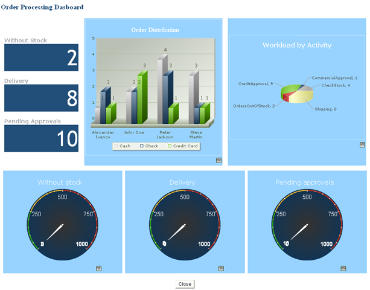
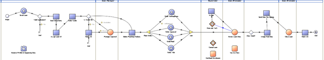
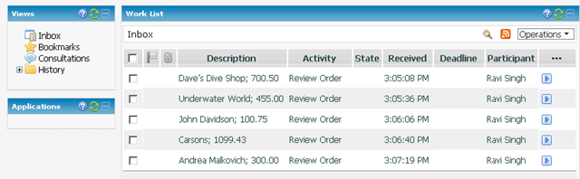
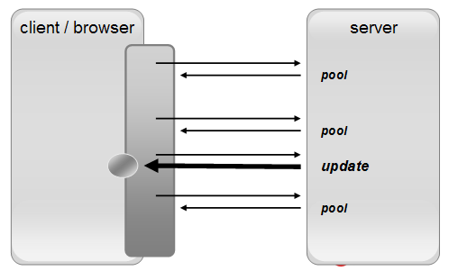
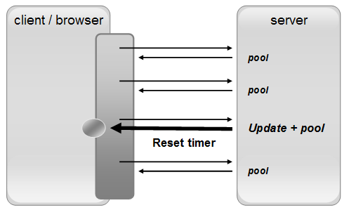
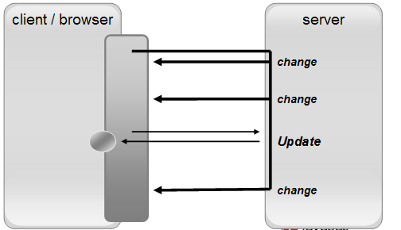
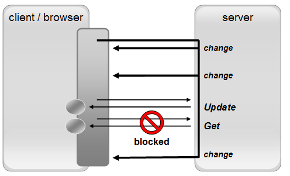
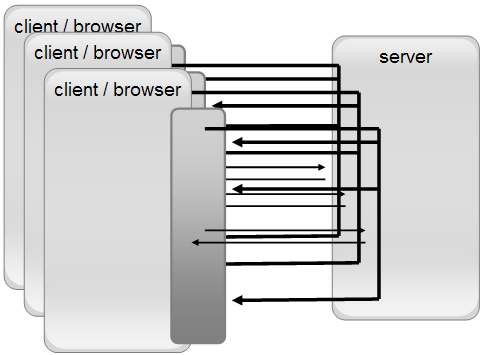
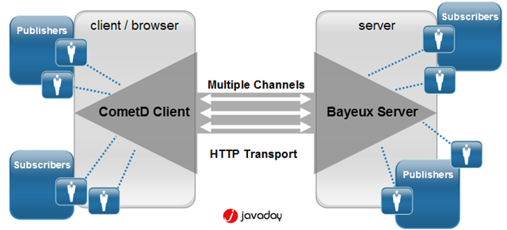

Bayeux Protocol Beginning
- Http was designed as a protocol for retriving documents from remote servers
- Communication between the client and the server is always initiated by the client and never by the server
- Connections between the client and the server are transient and the server do not maintain any long-time state information regarding the client
Twist the Formula
- Why, then, should you want the server to be able contact the client, and maintain persistent connections
-There are serveral suitable common use case-
use cases: AdviceME
- Monitoring and Data Feeds
- Client as a Dashboard or Monitor
- Demand for monitoring applications
- Market data feeds
- Security Alerting
- SLA Violation Advisor

use cases:Please Wait
Progress Updates
- Communicating progress on long-running server-side activities
- Report progress on long running server task

use cases:Share with me
Chat and Collaboration
- Chat System
- Photo sharing
- On-line Gaming
- Collaborative Tools

Actual Approachs
Pushing Using Polling
Collaborative abilit by pooling the server with client regular request asking for update
- Network wasteful
- Server resource exhaustion
- Client repeatedly contact the server to check for change
- Pooling schedule not affected

Piggybacking
- The contents of the response aren't strictly reltated to the nature of the request
- Response will also contain any change to the domain model
- Pooling schedule reset

Comet techniques
- Keep the response stream open for a significantly longer time
- Server send several pieces of data back in the response
- Comet request is held open on the server for a while, multiple discrete changes are communicated
- Long Pooling

Comet techniques
- Most modern web browser, permit only 2 concurrent HTTP connection to the given domain
- If more than one request is being held open against the same server, ordinary request will be blocked
- (same for different broser-tab)

Comet techniques
- Traditional servers allocate a thread to each incoming request
- Design work well when serving large volume of short lived request
- Long polls are held open request for a considerable length of time
- Thread-per-Request model is generally unable to scale to large number of clients
- Java servlet model itself is inherently a thread-per-request

Comet techniques
- Java servlet model was developed to serve a very different traffic profile
- A Large number of simultaneous request from Comet clients would exhaust the server's thread pool(doesn't scale well)
- More Comet-Friendly server architectures from the the java-community
- Continuations(Jetty 6)
- Grizzly
- Tomcat 6
- JSR 315 Servlet 3.0

Comet and Reverse Ajax
Bayeux provides a very nice abstraction on top of Comet transport, by casting the transfer data in term of channels, to which clients can publish and subscribe
Bayeux-->CometD
Bayeux
- Emerging de facto standard for comet
- Existing reference implementation
Comet
- Provided by the people at Sitepen;
- The same as DOJO Javascript Tookit
- Adopts exactly the same approaches and provides a flexible, sacalabel API based around a publish-subscribe model
- Data sent through, is always assigned a notional "channel"

- Channels allows multiple decoupled conversations on top of a single HTTP connection
- The client-side CometD and the server-side Bayeux implementation communication over several notional channels, all bundled within a single HTTP request-response
- Cometd is a project by the Dojo Fundation to implement Bayeux specification
- Bayeux is a purpose to implement responsive user interation for web clients using Ajax and server-push techniques called Comet
The message are routed via named channels and can be delived
- server2client
- client2server
- client2client
Bayeux message are specified in JSON notation
{
"channel":"some/name",
"clientld":"83js73jsh29sjd92",
"data":{"myapp":"specific data", value:100};
}
JavaScript Object Notation is a lightweight data-interchage format
- Channels are by default broadcast publish subscribe
- Channels are identified by names and always starts with "/"
- Channels pattern support trailling wildcards of either "*" or "**"
- /news/*
Valid chnnedls:/news/italy, /news/uk,...
- /news/**
Valid channels:/news/italy, /news/italy/lazio...
- Bayeux events is sent from the server to the client via HTTP response to a HTTP request sent in anticipation
- Polling Transport
- On receipt of the HTTP response, the bayeux client issues a new bayeux message
- Streaming Transport
- Use streaming technique (forever response), allowing multiple message to be sent over the same response
- To solve the issue of bi-directional communications, Bayeux client will use two HTTP connections